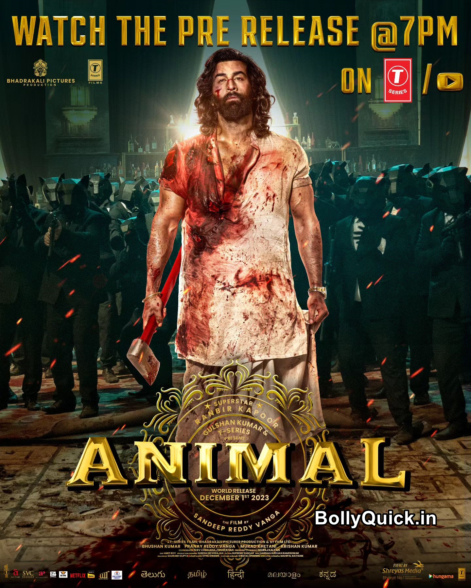

SAM BAHADUR

Revolves around the high and low points of Sam Manekshaw who became the first Indian Army officer
to be promoted to the rank of Field Marshal.
Director
Meghna Gulzar
Writers
Meghna GulzarBhavani
IyerShantanu
Srivastava
Stars
Vicky Kaushal
Kalki Koechlin
Fatima Sana Shaikh
Animal

A father, who is often away due to work, is unable to comprehend the intensity of his
son's fervent love and admiration, which creates conflict between both of them.
Director
Sandeep Reddy Vanga
Writers
Suresh Bandaru
Saurabh Gupta
Pranay Reddy Vanga
Stars
Ranbir Kapoor
Anil Kapoor
Bobby Deol